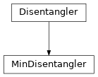

MinDisentangler¶
full name: tenpy.algorithms.purification_tebd.MinDisentangler
parent module:
tenpy.algorithms.purification_tebdtype: class
Inheritance Diagram

Methods
|
Initialize self. |
-
class
tenpy.algorithms.purification_tebd.MinDisentangler(disentanglers, parent)[source]¶ Bases:
tenpy.algorithms.purification_tebd.DisentanglerChose the disentangler giving the smallest entropy.
Apply each of the disentanglers to the given theta, use the result with smallest entropy. Reads the TEBD_param
'disent_min_n'which selects theentropy()to be used for comparison.- Parameters
disentanglers (list of
Disentangler) – The disentanglers to be used.parent (
Engine) – The parent class calling the disentangler.
-
disentanglers¶ The disentanglers to be used.
- Type
list of
Disentangler